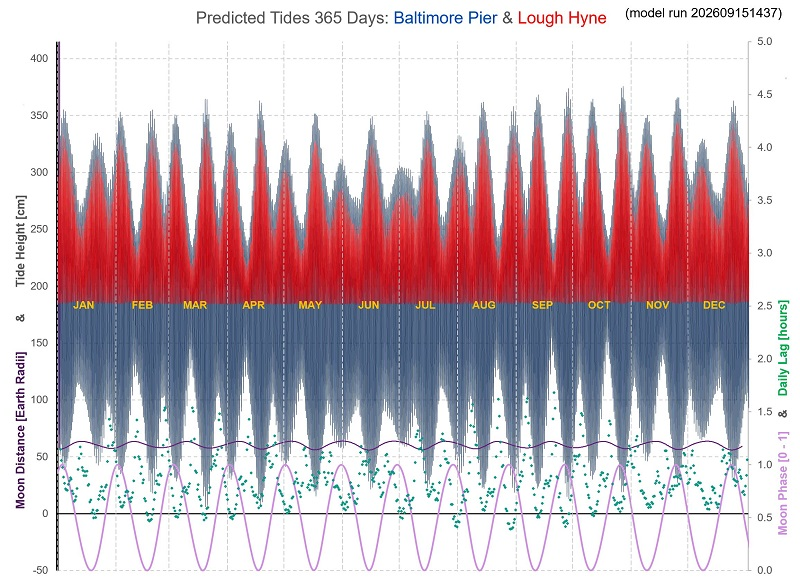

Predicted Tides at Baltimore (full 2026).
These Tide Predictions are computed by a mathematical model using values derived from tide-height data collected at random times at Baltimore Pier since 2024. Sea-level
heights were established by photographing the steel ladders at the Pier, a de facto measurement scale. Pressure was recorded too, since mean sea level
varies approximately 1cm for every unit of pressure.
The height and pressure data, plus the prevailing astronomical positions of the Sun and Moon, allow the model to solve for a set of harmonic constants (wave amplitudes and phase-lags)
for the multiple tidal constituents (M2, S2, N2, K2, M4 and many more), providing a “best fit” to the data collected.
These harmonic constants serve as a unique "characteristic" of our tide at the Pier, and can be usefully used to predict. As more data gets collected, the more accurate
the model becomes.
(Watch this space for tide predictions for Lough Hyne)
Predicted Tides at Baltimore Pier, 2026
Chart of the whole 2026 year's tides and extra data. Click for higher-res chart.
- times are GMT: add 1 hour for for DST
- main block of wavy data: each high and low through the year [scale in cm on LHS]
- upper slightly wavy purple line: Lunar distance from Earth
- green dots: extent, in hours, by which this tide exceeds previous tide minus 24 hours [RH scale]
- lowest pink oscillating line: Moon Phase [0-1 on RH scale]

Full Year's Highs and Lows 2026 (times are GMT: add 1 hour for for DST)
Thu 1 Jan 2026 High: 02:20 3.39m
Thu 1 Jan 2026 Low: 09:15 0.93m
Thu 1 Jan 2026 High: 14:58 3.49m
Thu 1 Jan 2026 Low: 21:50 0.83m
Fri 2 Jan 2026 High: 03:28 3.51m
Fri 2 Jan 2026 Low: 10:25 0.78m
Fri 2 Jan 2026 High: 16:05 3.61m
Fri 2 Jan 2026 Low: 22:55 0.69m
Sat 3 Jan 2026 High: 04:35 3.61m
Sat 3 Jan 2026 Low: 11:25 0.66m
Sat 3 Jan 2026 High: 17:11 3.71m
Sat 3 Jan 2026 Low: 23:51 0.58m
Sun 4 Jan 2026 High: 05:40 3.69m
Sun 4 Jan 2026 Low: 12:17 0.60m
Sun 4 Jan 2026 High: 18:12 3.78m
Mon 5 Jan 2026 Low: 00:38 0.55m
Mon 5 Jan 2026 High: 06:39 3.74m
Mon 5 Jan 2026 Low: 13:02 0.60m
Mon 5 Jan 2026 High: 19:06 3.81m
Tue 6 Jan 2026 Low: 01:19 0.58m
Tue 6 Jan 2026 High: 07:29 3.75m
Tue 6 Jan 2026 Low: 13:41 0.66m
Tue 6 Jan 2026 High: 19:51 3.80m
Wed 7 Jan 2026 Low: 01:55 0.67m
Wed 7 Jan 2026 High: 08:13 3.71m
Wed 7 Jan 2026 Low: 14:16 0.77m
Wed 7 Jan 2026 High: 20:31 3.73m
Thu 8 Jan 2026 Low: 02:30 0.79m
Thu 8 Jan 2026 High: 08:51 3.60m
Thu 8 Jan 2026 Low: 14:54 0.90m
Thu 8 Jan 2026 High: 21:08 3.60m
Fri 9 Jan 2026 Low: 03:09 0.93m
Fri 9 Jan 2026 High: 09:28 3.44m
Fri 9 Jan 2026 Low: 15:36 1.03m
Fri 9 Jan 2026 High: 21:45 3.42m
Sat 10 Jan 2026 Low: 03:53 1.07m
Sat 10 Jan 2026 High: 10:08 3.25m
Sat 10 Jan 2026 Low: 16:21 1.16m
Sat 10 Jan 2026 High: 22:28 3.22m
Sun 11 Jan 2026 Low: 04:39 1.20m
Sun 11 Jan 2026 High: 11:00 3.07m
Sun 11 Jan 2026 Low: 17:07 1.27m
Sun 11 Jan 2026 High: 23:24 3.05m
Mon 12 Jan 2026 Low: 05:29 1.31m
Mon 12 Jan 2026 High: 12:04 2.95m
Mon 12 Jan 2026 Low: 17:58 1.36m
Tue 13 Jan 2026 High: 00:29 2.97m
Tue 13 Jan 2026 Low: 06:29 1.39m
Tue 13 Jan 2026 High: 13:08 2.94m
Tue 13 Jan 2026 Low: 19:02 1.41m
Wed 14 Jan 2026 High: 01:30 2.99m
Wed 14 Jan 2026 Low: 07:46 1.40m
Wed 14 Jan 2026 High: 14:03 3.00m
Wed 14 Jan 2026 Low: 20:16 1.38m
Thu 15 Jan 2026 High: 02:24 3.04m
Thu 15 Jan 2026 Low: 08:57 1.31m
Thu 15 Jan 2026 High: 14:54 3.08m
Thu 15 Jan 2026 Low: 21:19 1.27m
Fri 16 Jan 2026 High: 03:14 3.12m
Fri 16 Jan 2026 Low: 09:50 1.18m
Fri 16 Jan 2026 High: 15:42 3.16m
Fri 16 Jan 2026 Low: 22:07 1.12m
Sat 17 Jan 2026 High: 04:02 3.19m
Sat 17 Jan 2026 Low: 10:32 1.03m
Sat 17 Jan 2026 High: 16:28 3.25m
Sat 17 Jan 2026 Low: 22:46 0.98m
Sun 18 Jan 2026 High: 04:47 3.26m
Sun 18 Jan 2026 Low: 11:08 0.90m
Sun 18 Jan 2026 High: 17:11 3.33m
Sun 18 Jan 2026 Low: 23:21 0.87m
Mon 19 Jan 2026 High: 05:27 3.34m
Mon 19 Jan 2026 Low: 11:40 0.81m
Mon 19 Jan 2026 High: 17:49 3.41m
Mon 19 Jan 2026 Low: 23:51 0.79m
Tue 20 Jan 2026 High: 06:03 3.40m
Tue 20 Jan 2026 Low: 12:09 0.75m
Tue 20 Jan 2026 High: 18:22 3.49m
Wed 21 Jan 2026 Low: 00:19 0.75m
Wed 21 Jan 2026 High: 06:34 3.46m
Wed 21 Jan 2026 Low: 12:36 0.73m
Wed 21 Jan 2026 High: 18:51 3.54m
Thu 22 Jan 2026 Low: 00:47 0.76m
Thu 22 Jan 2026 High: 07:02 3.49m
Thu 22 Jan 2026 Low: 13:04 0.76m
Thu 22 Jan 2026 High: 19:19 3.57m
Fri 23 Jan 2026 Low: 01:17 0.81m
Fri 23 Jan 2026 High: 07:31 3.48m
Fri 23 Jan 2026 Low: 13:36 0.83m
Fri 23 Jan 2026 High: 19:49 3.55m
Sat 24 Jan 2026 Low: 01:52 0.89m
Sat 24 Jan 2026 High: 08:03 3.43m
Sat 24 Jan 2026 Low: 14:16 0.92m
Sat 24 Jan 2026 High: 20:23 3.48m
Sun 25 Jan 2026 Low: 02:37 1.00m
Sun 25 Jan 2026 High: 08:42 3.32m
Sun 25 Jan 2026 Low: 15:07 1.03m
Sun 25 Jan 2026 High: 21:07 3.35m
Mon 26 Jan 2026 Low: 03:36 1.12m
Mon 26 Jan 2026 High: 09:35 3.17m
Mon 26 Jan 2026 Low: 16:09 1.13m
Mon 26 Jan 2026 High: 22:08 3.21m
Tue 27 Jan 2026 Low: 04:46 1.21m
Tue 27 Jan 2026 High: 10:51 3.04m
Tue 27 Jan 2026 Low: 17:23 1.22m
Tue 27 Jan 2026 High: 23:33 3.12m
Wed 28 Jan 2026 Low: 06:16 1.27m
Wed 28 Jan 2026 High: 12:26 3.03m
Wed 28 Jan 2026 Low: 18:57 1.25m
Thu 29 Jan 2026 High: 01:04 3.16m
Thu 29 Jan 2026 Low: 07:59 1.22m
Thu 29 Jan 2026 High: 13:50 3.14m
Thu 29 Jan 2026 Low: 20:35 1.16m
Fri 30 Jan 2026 High: 02:23 3.29m
Fri 30 Jan 2026 Low: 09:26 1.05m
Fri 30 Jan 2026 High: 15:03 3.31m
Fri 30 Jan 2026 Low: 21:55 0.98m
Sat 31 Jan 2026 High: 03:31 3.45m
Sat 31 Jan 2026 Low: 10:33 0.83m
Sat 31 Jan 2026 High: 16:07 3.49m
Sat 31 Jan 2026 Low: 22:55 0.79m
Sun 1 Feb 2026 High: 04:33 3.60m
Sun 1 Feb 2026 Low: 11:26 0.64m
Sun 1 Feb 2026 High: 17:05 3.65m
Sun 1 Feb 2026 Low: 23:43 0.64m
Mon 2 Feb 2026 High: 05:28 3.72m
Mon 2 Feb 2026 Low: 12:07 0.52m
Mon 2 Feb 2026 High: 17:55 3.77m
Tue 3 Feb 2026 Low: 00:21 0.56m
Tue 3 Feb 2026 High: 06:16 3.80m
Tue 3 Feb 2026 Low: 12:41 0.47m
Tue 3 Feb 2026 High: 18:40 3.86m
Wed 4 Feb 2026 Low: 00:52 0.55m
Wed 4 Feb 2026 High: 06:58 3.84m
Wed 4 Feb 2026 Low: 13:09 0.49m
Wed 4 Feb 2026 High: 19:18 3.88m
Thu 5 Feb 2026 Low: 01:17 0.61m
Thu 5 Feb 2026 High: 07:34 3.80m
Thu 5 Feb 2026 Low: 13:33 0.58m
Thu 5 Feb 2026 High: 19:53 3.83m
Fri 6 Feb 2026 Low: 01:41 0.72m
Fri 6 Feb 2026 High: 08:07 3.70m
Fri 6 Feb 2026 Low: 13:57 0.70m
Fri 6 Feb 2026 High: 20:25 3.70m
Sat 7 Feb 2026 Low: 02:06 0.87m
Sat 7 Feb 2026 High: 08:40 3.52m
Sat 7 Feb 2026 Low: 14:24 0.86m
Sat 7 Feb 2026 High: 20:57 3.51m
Sun 8 Feb 2026 Low: 02:38 1.04m
Sun 8 Feb 2026 High: 09:14 3.29m
Sun 8 Feb 2026 Low: 14:59 1.04m
Sun 8 Feb 2026 High: 21:34 3.28m
Mon 9 Feb 2026 Low: 03:21 1.22m
Mon 9 Feb 2026 High: 09:56 3.03m
Mon 9 Feb 2026 Low: 15:45 1.21m
Mon 9 Feb 2026 High: 22:23 3.05m
Tue 10 Feb 2026 Low: 04:18 1.39m
Tue 10 Feb 2026 High: 11:01 2.81m
Tue 10 Feb 2026 Low: 16:43 1.37m
Tue 10 Feb 2026 High: 23:38 2.88m
Wed 11 Feb 2026 Low: 05:32 1.51m
Wed 11 Feb 2026 High: 12:27 2.72m
Wed 11 Feb 2026 Low: 17:56 1.48m
Thu 12 Feb 2026 High: 01:00 2.85m
Thu 12 Feb 2026 Low: 07:11 1.54m
Thu 12 Feb 2026 High: 13:39 2.78m
Thu 12 Feb 2026 Low: 19:34 1.50m
Fri 13 Feb 2026 High: 02:05 2.94m
Fri 13 Feb 2026 Low: 08:39 1.42m
Fri 13 Feb 2026 High: 14:37 2.91m
Fri 13 Feb 2026 Low: 20:54 1.37m
Sat 14 Feb 2026 High: 02:58 3.07m
Sat 14 Feb 2026 Low: 09:36 1.21m
Sat 14 Feb 2026 High: 15:26 3.06m
Sat 14 Feb 2026 Low: 21:48 1.18m
Sun 15 Feb 2026 High: 03:44 3.21m
Sun 15 Feb 2026 Low: 10:18 0.99m
Sun 15 Feb 2026 High: 16:09 3.22m
Sun 15 Feb 2026 Low: 22:28 0.98m
Mon 16 Feb 2026 High: 04:24 3.34m
Mon 16 Feb 2026 Low: 10:52 0.79m
Mon 16 Feb 2026 High: 16:46 3.36m
Mon 16 Feb 2026 Low: 23:01 0.82m
Tue 17 Feb 2026 High: 04:59 3.46m
Tue 17 Feb 2026 Low: 11:21 0.64m
Tue 17 Feb 2026 High: 17:20 3.50m
Tue 17 Feb 2026 Low: 23:29 0.70m
Wed 18 Feb 2026 High: 05:31 3.56m
Wed 18 Feb 2026 Low: 11:47 0.54m
Wed 18 Feb 2026 High: 17:50 3.61m
Wed 18 Feb 2026 Low: 23:55 0.64m
Thu 19 Feb 2026 High: 06:00 3.64m
Thu 19 Feb 2026 Low: 12:13 0.51m
Thu 19 Feb 2026 High: 18:20 3.68m
Fri 20 Feb 2026 Low: 00:21 0.65m
Fri 20 Feb 2026 High: 06:30 3.67m
Fri 20 Feb 2026 Low: 12:38 0.54m
Fri 20 Feb 2026 High: 18:50 3.72m
Sat 21 Feb 2026 Low: 00:48 0.71m
Sat 21 Feb 2026 High: 07:02 3.65m
Sat 21 Feb 2026 Low: 13:07 0.62m
Sat 21 Feb 2026 High: 19:24 3.69m
Sun 22 Feb 2026 Low: 01:20 0.83m
Sun 22 Feb 2026 High: 07:39 3.56m
Sun 22 Feb 2026 Low: 13:43 0.76m
Sun 22 Feb 2026 High: 20:04 3.59m
Mon 23 Feb 2026 Low: 02:03 0.99m
Mon 23 Feb 2026 High: 08:23 3.41m
Mon 23 Feb 2026 Low: 14:31 0.93m
Mon 23 Feb 2026 High: 20:53 3.43m
Tue 24 Feb 2026 Low: 03:03 1.17m
Tue 24 Feb 2026 High: 09:19 3.20m
Tue 24 Feb 2026 Low: 15:38 1.11m
Tue 24 Feb 2026 High: 21:57 3.23m
Wed 25 Feb 2026 Low: 04:34 1.33m
Wed 25 Feb 2026 High: 10:36 2.98m
Wed 25 Feb 2026 Low: 17:07 1.26m
Wed 25 Feb 2026 High: 23:27 3.07m
Thu 26 Feb 2026 Low: 06:28 1.40m
Thu 26 Feb 2026 High: 12:23 2.89m
Thu 26 Feb 2026 Low: 18:57 1.33m
Fri 27 Feb 2026 High: 01:10 3.08m
Fri 27 Feb 2026 Low: 08:13 1.31m
Fri 27 Feb 2026 High: 13:55 3.00m
Fri 27 Feb 2026 Low: 20:38 1.25m
Sat 28 Feb 2026 High: 02:28 3.25m
Sat 28 Feb 2026 Low: 09:32 1.09m
Sat 28 Feb 2026 High: 15:03 3.21m
Sat 28 Feb 2026 Low: 21:51 1.05m
Sun 1 Mar 2026 High: 03:29 3.45m
Sun 1 Mar 2026 Low: 10:29 0.84m
Sun 1 Mar 2026 High: 15:58 3.43m
Sun 1 Mar 2026 Low: 22:43 0.84m
Mon 2 Mar 2026 High: 04:19 3.63m
Mon 2 Mar 2026 Low: 11:11 0.62m
Mon 2 Mar 2026 High: 16:45 3.61m
Mon 2 Mar 2026 Low: 23:21 0.67m
Tue 3 Mar 2026 High: 05:03 3.77m
Tue 3 Mar 2026 Low: 11:43 0.47m
Tue 3 Mar 2026 High: 17:26 3.76m
Tue 3 Mar 2026 Low: 23:50 0.58m
Wed 4 Mar 2026 High: 05:42 3.86m
Wed 4 Mar 2026 Low: 12:08 0.40m
Wed 4 Mar 2026 High: 18:04 3.85m
Thu 5 Mar 2026 Low: 00:14 0.56m
Thu 5 Mar 2026 High: 06:18 3.89m
Thu 5 Mar 2026 Low: 12:29 0.40m
Thu 5 Mar 2026 High: 18:38 3.87m
Fri 6 Mar 2026 Low: 00:33 0.61m
Fri 6 Mar 2026 High: 06:52 3.84m
Fri 6 Mar 2026 Low: 12:48 0.47m
Fri 6 Mar 2026 High: 19:11 3.81m
Sat 7 Mar 2026 Low: 00:51 0.71m
Sat 7 Mar 2026 High: 07:24 3.72m
Sat 7 Mar 2026 Low: 13:06 0.59m
Sat 7 Mar 2026 High: 19:43 3.69m
Sun 8 Mar 2026 Low: 01:12 0.85m
Sun 8 Mar 2026 High: 07:55 3.53m
Sun 8 Mar 2026 Low: 13:30 0.74m
Sun 8 Mar 2026 High: 20:15 3.50m
Mon 9 Mar 2026 Low: 01:41 1.04m
Mon 9 Mar 2026 High: 08:27 3.29m
Mon 9 Mar 2026 Low: 14:02 0.94m
Mon 9 Mar 2026 High: 20:51 3.27m
Tue 10 Mar 2026 Low: 02:22 1.24m
Tue 10 Mar 2026 High: 09:04 3.03m
Tue 10 Mar 2026 Low: 14:48 1.15m
Tue 10 Mar 2026 High: 21:34 3.03m
Wed 11 Mar 2026 Low: 03:21 1.45m
Wed 11 Mar 2026 High: 09:55 2.77m
Wed 11 Mar 2026 Low: 15:49 1.34m
Wed 11 Mar 2026 High: 22:45 2.82m
Thu 12 Mar 2026 Low: 04:53 1.59m
Thu 12 Mar 2026 High: 11:39 2.59m
Thu 12 Mar 2026 Low: 17:12 1.48m
Fri 13 Mar 2026 High: 00:30 2.78m
Fri 13 Mar 2026 Low: 06:41 1.60m
Fri 13 Mar 2026 High: 13:10 2.65m
Fri 13 Mar 2026 Low: 18:52 1.50m
Sat 14 Mar 2026 High: 01:42 2.90m
Sat 14 Mar 2026 Low: 08:08 1.45m
Sat 14 Mar 2026 High: 14:11 2.82m
Sat 14 Mar 2026 Low: 20:17 1.38m
Sun 15 Mar 2026 High: 02:33 3.09m
Sun 15 Mar 2026 Low: 09:06 1.21m
Sun 15 Mar 2026 High: 14:56 3.03m
Sun 15 Mar 2026 Low: 21:14 1.17m
Mon 16 Mar 2026 High: 03:13 3.28m
Mon 16 Mar 2026 Low: 09:47 0.94m
Mon 16 Mar 2026 High: 15:34 3.23m
Mon 16 Mar 2026 Low: 21:54 0.94m
Tue 17 Mar 2026 High: 03:48 3.45m
Tue 17 Mar 2026 Low: 10:20 0.70m
Tue 17 Mar 2026 High: 16:08 3.41m
Tue 17 Mar 2026 Low: 22:27 0.75m
Wed 18 Mar 2026 High: 04:20 3.60m
Wed 18 Mar 2026 Low: 10:49 0.52m
Wed 18 Mar 2026 High: 16:40 3.57m
Wed 18 Mar 2026 Low: 22:57 0.62m
Thu 19 Mar 2026 High: 04:51 3.71m
Thu 19 Mar 2026 Low: 11:17 0.40m
Thu 19 Mar 2026 High: 17:12 3.68m
Thu 19 Mar 2026 Low: 23:25 0.56m
Fri 20 Mar 2026 High: 05:24 3.78m
Fri 20 Mar 2026 Low: 11:45 0.37m
Fri 20 Mar 2026 High: 17:47 3.76m
Fri 20 Mar 2026 Low: 23:54 0.58m
Sat 21 Mar 2026 High: 06:01 3.79m
Sat 21 Mar 2026 Low: 12:15 0.40m
Sat 21 Mar 2026 High: 18:26 3.78m
Sun 22 Mar 2026 Low: 00:26 0.67m
Sun 22 Mar 2026 High: 06:42 3.75m
Sun 22 Mar 2026 Low: 12:49 0.51m
Sun 22 Mar 2026 High: 19:10 3.73m
Mon 23 Mar 2026 Low: 01:03 0.82m
Mon 23 Mar 2026 High: 07:29 3.63m
Mon 23 Mar 2026 Low: 13:30 0.68m
Mon 23 Mar 2026 High: 20:00 3.61m
Tue 24 Mar 2026 Low: 01:50 1.02m
Tue 24 Mar 2026 High: 08:22 3.44m
Tue 24 Mar 2026 Low: 14:21 0.89m
Tue 24 Mar 2026 High: 20:58 3.42m
Wed 25 Mar 2026 Low: 02:54 1.24m
Wed 25 Mar 2026 High: 09:24 3.20m
Wed 25 Mar 2026 Low: 15:32 1.11m
Wed 25 Mar 2026 High: 22:05 3.21m
Thu 26 Mar 2026 Low: 04:55 1.42m
Thu 26 Mar 2026 High: 10:40 2.96m
Thu 26 Mar 2026 Low: 17:19 1.28m
Thu 26 Mar 2026 High: 23:34 3.04m
Fri 27 Mar 2026 Low: 06:45 1.45m
Fri 27 Mar 2026 High: 12:23 2.85m
Fri 27 Mar 2026 Low: 19:03 1.33m
Sat 28 Mar 2026 High: 01:12 3.07m
Sat 28 Mar 2026 Low: 08:12 1.33m
Sat 28 Mar 2026 High: 13:49 2.96m
Sat 28 Mar 2026 Low: 20:27 1.24m
Sun 29 Mar 2026 High: 02:22 3.25m
Sun 29 Mar 2026 Low: 09:19 1.11m
Sun 29 Mar 2026 High: 14:48 3.17m
Sun 29 Mar 2026 Low: 21:31 1.07m
Mon 30 Mar 2026 High: 03:12 3.47m
Mon 30 Mar 2026 Low: 10:07 0.87m
Mon 30 Mar 2026 High: 15:34 3.39m
Mon 30 Mar 2026 Low: 22:15 0.88m
Tue 31 Mar 2026 High: 03:53 3.65m
Tue 31 Mar 2026 Low: 10:42 0.65m
Tue 31 Mar 2026 High: 16:13 3.57m
Tue 31 Mar 2026 Low: 22:48 0.73m
Wed 1 Apr 2026 High: 04:30 3.78m
Wed 1 Apr 2026 Low: 11:09 0.51m
Wed 1 Apr 2026 High: 16:49 3.70m
Wed 1 Apr 2026 Low: 23:14 0.65m
Thu 2 Apr 2026 High: 05:05 3.85m
Thu 2 Apr 2026 Low: 11:31 0.44m
Thu 2 Apr 2026 High: 17:25 3.76m
Thu 2 Apr 2026 Low: 23:35 0.63m
Fri 3 Apr 2026 High: 05:39 3.85m
Fri 3 Apr 2026 Low: 11:51 0.43m
Fri 3 Apr 2026 High: 17:59 3.76m
Fri 3 Apr 2026 Low: 23:53 0.67m
Sat 4 Apr 2026 High: 06:13 3.78m
Sat 4 Apr 2026 Low: 12:09 0.48m
Sat 4 Apr 2026 High: 18:34 3.69m
Sun 5 Apr 2026 Low: 00:11 0.76m
Sun 5 Apr 2026 High: 06:46 3.66m
Sun 5 Apr 2026 Low: 12:29 0.58m
Sun 5 Apr 2026 High: 19:09 3.58m
Mon 6 Apr 2026 Low: 00:34 0.89m
Mon 6 Apr 2026 High: 07:20 3.48m
Mon 6 Apr 2026 Low: 12:54 0.72m
Mon 6 Apr 2026 High: 19:44 3.42m
Tue 7 Apr 2026 Low: 01:04 1.06m
Tue 7 Apr 2026 High: 07:54 3.27m
Tue 7 Apr 2026 Low: 13:28 0.90m
Tue 7 Apr 2026 High: 20:20 3.23m
Wed 8 Apr 2026 Low: 01:46 1.26m
Wed 8 Apr 2026 High: 08:30 3.05m
Wed 8 Apr 2026 Low: 14:13 1.10m
Wed 8 Apr 2026 High: 21:01 3.02m
Thu 9 Apr 2026 Low: 02:44 1.47m
Thu 9 Apr 2026 High: 09:13 2.82m
Thu 9 Apr 2026 Low: 15:17 1.30m
Thu 9 Apr 2026 High: 21:59 2.84m
Fri 10 Apr 2026 Low: 04:27 1.60m
Fri 10 Apr 2026 High: 10:31 2.63m
Fri 10 Apr 2026 Low: 16:44 1.42m
Fri 10 Apr 2026 High: 23:46 2.77m
Sat 11 Apr 2026 Low: 06:04 1.58m
Sat 11 Apr 2026 High: 12:24 2.63m
Sat 11 Apr 2026 Low: 18:10 1.42m
Sun 12 Apr 2026 High: 01:04 2.90m
Sun 12 Apr 2026 Low: 07:19 1.43m
Sun 12 Apr 2026 High: 13:27 2.80m
Sun 12 Apr 2026 Low: 19:25 1.32m
Mon 13 Apr 2026 High: 01:53 3.11m
Mon 13 Apr 2026 Low: 08:17 1.20m
Mon 13 Apr 2026 High: 14:11 3.03m
Mon 13 Apr 2026 Low: 20:25 1.13m
Tue 14 Apr 2026 High: 02:30 3.32m
Tue 14 Apr 2026 Low: 09:02 0.94m
Tue 14 Apr 2026 High: 14:47 3.24m
Tue 14 Apr 2026 Low: 21:09 0.92m
Wed 15 Apr 2026 High: 03:03 3.52m
Wed 15 Apr 2026 Low: 09:39 0.69m
Wed 15 Apr 2026 High: 15:21 3.44m
Wed 15 Apr 2026 Low: 21:47 0.73m
Thu 16 Apr 2026 High: 03:36 3.67m
Thu 16 Apr 2026 Low: 10:13 0.50m
Thu 16 Apr 2026 High: 15:56 3.59m
Thu 16 Apr 2026 Low: 22:23 0.60m
Fri 17 Apr 2026 High: 04:13 3.78m
Fri 17 Apr 2026 Low: 10:47 0.38m
Fri 17 Apr 2026 High: 16:36 3.70m
Fri 17 Apr 2026 Low: 22:59 0.55m
Sat 18 Apr 2026 High: 04:54 3.84m
Sat 18 Apr 2026 Low: 11:24 0.34m
Sat 18 Apr 2026 High: 17:22 3.76m
Sat 18 Apr 2026 Low: 23:38 0.58m
Sun 19 Apr 2026 High: 05:43 3.84m
Sun 19 Apr 2026 Low: 12:04 0.39m
Sun 19 Apr 2026 High: 18:14 3.76m
Mon 20 Apr 2026 Low: 00:20 0.68m
Mon 20 Apr 2026 High: 06:36 3.77m
Mon 20 Apr 2026 Low: 12:48 0.50m
Mon 20 Apr 2026 High: 19:10 3.70m
Tue 21 Apr 2026 Low: 01:06 0.84m
Tue 21 Apr 2026 High: 07:34 3.65m
Tue 21 Apr 2026 Low: 13:36 0.68m
Tue 21 Apr 2026 High: 20:09 3.58m
Wed 22 Apr 2026 Low: 01:58 1.05m
Wed 22 Apr 2026 High: 08:33 3.46m
Wed 22 Apr 2026 Low: 14:31 0.89m
Wed 22 Apr 2026 High: 21:10 3.41m
Thu 23 Apr 2026 Low: 03:11 1.27m
Thu 23 Apr 2026 High: 09:35 3.24m
Thu 23 Apr 2026 Low: 15:49 1.10m
Thu 23 Apr 2026 High: 22:14 3.22m
Fri 24 Apr 2026 Low: 05:16 1.40m
Fri 24 Apr 2026 High: 10:44 3.02m
Fri 24 Apr 2026 Low: 17:32 1.23m
Fri 24 Apr 2026 High: 23:32 3.08m
Sat 25 Apr 2026 Low: 06:37 1.40m
Sat 25 Apr 2026 High: 12:07 2.92m
Sat 25 Apr 2026 Low: 18:49 1.26m
Sun 26 Apr 2026 High: 00:55 3.10m
Sun 26 Apr 2026 Low: 07:45 1.31m
Sun 26 Apr 2026 High: 13:23 2.99m
Sun 26 Apr 2026 Low: 19:56 1.21m
Mon 27 Apr 2026 High: 01:56 3.26m
Mon 27 Apr 2026 Low: 08:43 1.14m
Mon 27 Apr 2026 High: 14:18 3.16m
Mon 27 Apr 2026 Low: 20:53 1.09m
Tue 28 Apr 2026 High: 02:42 3.44m
Tue 28 Apr 2026 Low: 09:29 0.96m
Tue 28 Apr 2026 High: 15:00 3.34m
Tue 28 Apr 2026 Low: 21:37 0.96m
Wed 29 Apr 2026 High: 03:20 3.60m
Wed 29 Apr 2026 Low: 10:04 0.79m
Wed 29 Apr 2026 High: 15:37 3.48m
Wed 29 Apr 2026 Low: 22:11 0.84m
Thu 30 Apr 2026 High: 03:55 3.70m
Thu 30 Apr 2026 Low: 10:33 0.66m
Thu 30 Apr 2026 High: 16:12 3.57m
Thu 30 Apr 2026 Low: 22:38 0.78m
Fri 1 May 2026 High: 04:29 3.73m
Fri 1 May 2026 Low: 10:57 0.59m
Fri 1 May 2026 High: 16:49 3.60m
Fri 1 May 2026 Low: 23:02 0.76m
Sat 2 May 2026 High: 05:06 3.71m
Sat 2 May 2026 Low: 11:20 0.58m
Sat 2 May 2026 High: 17:27 3.58m
Sat 2 May 2026 Low: 23:24 0.79m
Sun 3 May 2026 High: 05:43 3.65m
Sun 3 May 2026 Low: 11:42 0.60m
Sun 3 May 2026 High: 18:06 3.52m
Sun 3 May 2026 Low: 23:47 0.85m
Mon 4 May 2026 High: 06:22 3.54m
Mon 4 May 2026 Low: 12:07 0.67m
Mon 4 May 2026 High: 18:45 3.43m
Tue 5 May 2026 Low: 00:13 0.95m
Tue 5 May 2026 High: 06:59 3.41m
Tue 5 May 2026 Low: 12:35 0.77m
Tue 5 May 2026 High: 19:24 3.32m
Wed 6 May 2026 Low: 00:46 1.08m
Wed 6 May 2026 High: 07:35 3.26m
Wed 6 May 2026 Low: 13:11 0.91m
Wed 6 May 2026 High: 20:01 3.19m
Thu 7 May 2026 Low: 01:27 1.24m
Thu 7 May 2026 High: 08:10 3.10m
Thu 7 May 2026 Low: 13:55 1.07m
Thu 7 May 2026 High: 20:39 3.05m
Fri 8 May 2026 Low: 02:24 1.41m
Fri 8 May 2026 High: 08:50 2.94m
Fri 8 May 2026 Low: 14:56 1.22m
Fri 8 May 2026 High: 21:25 2.93m
Sat 9 May 2026 Low: 03:57 1.50m
Sat 9 May 2026 High: 09:42 2.80m
Sat 9 May 2026 Low: 16:14 1.30m
Sat 9 May 2026 High: 22:38 2.85m
Sun 10 May 2026 Low: 05:15 1.47m
Sun 10 May 2026 High: 11:08 2.74m
Sun 10 May 2026 Low: 17:24 1.29m
Mon 11 May 2026 High: 00:03 2.92m
Mon 11 May 2026 Low: 06:18 1.37m
Mon 11 May 2026 High: 12:25 2.85m
Mon 11 May 2026 Low: 18:27 1.23m
Tue 12 May 2026 High: 00:58 3.10m
Tue 12 May 2026 Low: 07:16 1.20m
Tue 12 May 2026 High: 13:15 3.04m
Tue 12 May 2026 Low: 19:27 1.10m
Wed 13 May 2026 High: 01:40 3.30m
Wed 13 May 2026 Low: 08:08 1.00m
Wed 13 May 2026 High: 13:56 3.24m
Wed 13 May 2026 Low: 20:21 0.94m
Thu 14 May 2026 High: 02:18 3.49m
Thu 14 May 2026 Low: 08:56 0.78m
Thu 14 May 2026 High: 14:36 3.42m
Thu 14 May 2026 Low: 21:11 0.78m
Fri 15 May 2026 High: 02:59 3.65m
Fri 15 May 2026 Low: 09:41 0.60m
Fri 15 May 2026 High: 15:21 3.57m
Fri 15 May 2026 Low: 21:58 0.66m
Sat 16 May 2026 High: 03:45 3.75m
Sat 16 May 2026 Low: 10:28 0.47m
Sat 16 May 2026 High: 16:12 3.66m
Sat 16 May 2026 Low: 22:47 0.60m
Sun 17 May 2026 High: 04:39 3.81m
Sun 17 May 2026 Low: 11:17 0.42m
Sun 17 May 2026 High: 17:10 3.71m
Sun 17 May 2026 Low: 23:38 0.61m
Mon 18 May 2026 High: 05:39 3.81m
Mon 18 May 2026 Low: 12:08 0.45m
Mon 18 May 2026 High: 18:14 3.71m
Tue 19 May 2026 Low: 00:30 0.69m
Tue 19 May 2026 High: 06:43 3.77m
Tue 19 May 2026 Low: 12:59 0.54m
Tue 19 May 2026 High: 19:17 3.67m
Wed 20 May 2026 Low: 01:22 0.83m
Wed 20 May 2026 High: 07:44 3.68m
Wed 20 May 2026 Low: 13:50 0.69m
Wed 20 May 2026 High: 20:17 3.58m
Thu 21 May 2026 Low: 02:17 1.01m
Thu 21 May 2026 High: 08:41 3.54m
Thu 21 May 2026 Low: 14:46 0.87m
Thu 21 May 2026 High: 21:13 3.45m
Fri 22 May 2026 Low: 03:33 1.18m
Fri 22 May 2026 High: 09:35 3.37m
Fri 22 May 2026 Low: 15:59 1.03m
Fri 22 May 2026 High: 22:07 3.30m
Sat 23 May 2026 Low: 04:57 1.28m
Sat 23 May 2026 High: 10:30 3.19m
Sat 23 May 2026 Low: 17:14 1.13m
Sat 23 May 2026 High: 23:08 3.18m
Sun 24 May 2026 Low: 06:02 1.30m
Sun 24 May 2026 High: 11:34 3.07m
Sun 24 May 2026 Low: 18:14 1.18m
Mon 25 May 2026 High: 00:16 3.14m
Mon 25 May 2026 Low: 06:57 1.27m
Mon 25 May 2026 High: 12:41 3.06m
Mon 25 May 2026 Low: 19:08 1.19m
Tue 26 May 2026 High: 01:17 3.21m
Tue 26 May 2026 Low: 07:50 1.21m
Tue 26 May 2026 High: 13:36 3.14m
Tue 26 May 2026 Low: 20:03 1.15m
Wed 27 May 2026 High: 02:04 3.33m
Wed 27 May 2026 Low: 08:40 1.11m
Wed 27 May 2026 High: 14:21 3.25m
Wed 27 May 2026 Low: 20:54 1.09m
Thu 28 May 2026 High: 02:45 3.44m
Thu 28 May 2026 Low: 09:24 1.00m
Thu 28 May 2026 High: 15:02 3.34m
Thu 28 May 2026 Low: 21:36 1.01m
Fri 29 May 2026 High: 03:24 3.51m
Fri 29 May 2026 Low: 10:00 0.90m
Fri 29 May 2026 High: 15:41 3.40m
Fri 29 May 2026 Low: 22:11 0.95m
Sat 30 May 2026 High: 04:03 3.53m
Sat 30 May 2026 Low: 10:32 0.82m
Sat 30 May 2026 High: 16:23 3.41m
Sat 30 May 2026 Low: 22:43 0.92m
Sun 31 May 2026 High: 04:44 3.52m
Sun 31 May 2026 Low: 11:02 0.78m
Sun 31 May 2026 High: 17:06 3.40m
Sun 31 May 2026 Low: 23:12 0.91m
Mon 1 Jun 2026 High: 05:27 3.49m
Mon 1 Jun 2026 Low: 11:30 0.77m
Mon 1 Jun 2026 High: 17:49 3.37m
Mon 1 Jun 2026 Low: 23:40 0.93m
Tue 2 Jun 2026 High: 06:08 3.43m
Tue 2 Jun 2026 Low: 11:58 0.78m
Tue 2 Jun 2026 High: 18:31 3.33m
Wed 3 Jun 2026 Low: 00:09 0.97m
Wed 3 Jun 2026 High: 06:47 3.37m
Wed 3 Jun 2026 Low: 12:28 0.83m
Wed 3 Jun 2026 High: 19:09 3.28m
Thu 4 Jun 2026 Low: 00:41 1.05m
Thu 4 Jun 2026 High: 07:22 3.30m
Thu 4 Jun 2026 Low: 13:01 0.91m
Thu 4 Jun 2026 High: 19:43 3.22m
Fri 5 Jun 2026 Low: 01:19 1.14m
Fri 5 Jun 2026 High: 07:54 3.22m
Fri 5 Jun 2026 Low: 13:41 1.01m
Fri 5 Jun 2026 High: 20:15 3.15m
Sat 6 Jun 2026 Low: 02:08 1.24m
Sat 6 Jun 2026 High: 08:26 3.14m
Sat 6 Jun 2026 Low: 14:32 1.10m
Sat 6 Jun 2026 High: 20:50 3.08m
Sun 7 Jun 2026 Low: 03:13 1.31m
Sun 7 Jun 2026 High: 09:04 3.05m
Sun 7 Jun 2026 Low: 15:33 1.16m
Sun 7 Jun 2026 High: 21:35 3.01m
Mon 8 Jun 2026 Low: 04:18 1.31m
Mon 8 Jun 2026 High: 09:55 2.98m
Mon 8 Jun 2026 Low: 16:32 1.18m
Mon 8 Jun 2026 High: 22:39 2.99m
Tue 9 Jun 2026 Low: 05:15 1.28m
Tue 9 Jun 2026 High: 11:05 2.96m
Tue 9 Jun 2026 Low: 17:29 1.16m
Tue 9 Jun 2026 High: 23:51 3.06m
Wed 10 Jun 2026 Low: 06:12 1.20m
Wed 10 Jun 2026 High: 12:13 3.06m
Wed 10 Jun 2026 Low: 18:31 1.12m
Thu 11 Jun 2026 High: 00:49 3.21m
Thu 11 Jun 2026 Low: 07:15 1.09m
Thu 11 Jun 2026 High: 13:09 3.21m
Thu 11 Jun 2026 Low: 19:39 1.03m
Fri 12 Jun 2026 High: 01:41 3.38m
Fri 12 Jun 2026 Low: 08:19 0.94m
Fri 12 Jun 2026 High: 14:03 3.36m
Fri 12 Jun 2026 Low: 20:46 0.90m
Sat 13 Jun 2026 High: 02:35 3.53m
Sat 13 Jun 2026 Low: 09:22 0.77m
Sat 13 Jun 2026 High: 15:01 3.50m
Sat 13 Jun 2026 Low: 21:50 0.76m
Sun 14 Jun 2026 High: 03:34 3.64m
Sun 14 Jun 2026 Low: 10:23 0.63m
Sun 14 Jun 2026 High: 16:04 3.60m
Sun 14 Jun 2026 Low: 22:51 0.66m
Mon 15 Jun 2026 High: 04:38 3.72m
Mon 15 Jun 2026 Low: 11:21 0.54m
Mon 15 Jun 2026 High: 17:11 3.66m
Mon 15 Jun 2026 Low: 23:49 0.62m
Tue 16 Jun 2026 High: 05:45 3.77m
Tue 16 Jun 2026 Low: 12:17 0.52m
Tue 16 Jun 2026 High: 18:17 3.70m
Wed 17 Jun 2026 Low: 00:43 0.65m
Wed 17 Jun 2026 High: 06:47 3.78m
Wed 17 Jun 2026 Low: 13:07 0.56m
Wed 17 Jun 2026 High: 19:17 3.70m
Thu 18 Jun 2026 Low: 01:32 0.73m
Thu 18 Jun 2026 High: 07:43 3.75m
Thu 18 Jun 2026 Low: 13:54 0.66m
Thu 18 Jun 2026 High: 20:10 3.66m
Fri 19 Jun 2026 Low: 02:20 0.85m
Fri 19 Jun 2026 High: 08:32 3.68m
Fri 19 Jun 2026 Low: 14:41 0.79m
Fri 19 Jun 2026 High: 20:57 3.57m
Sat 20 Jun 2026 Low: 03:14 0.98m
Sat 20 Jun 2026 High: 09:16 3.56m
Sat 20 Jun 2026 Low: 15:34 0.92m
Sat 20 Jun 2026 High: 21:42 3.44m
Sun 21 Jun 2026 Low: 04:12 1.10m
Sun 21 Jun 2026 High: 10:00 3.40m
Sun 21 Jun 2026 Low: 16:30 1.04m
Sun 21 Jun 2026 High: 22:29 3.29m
Mon 22 Jun 2026 Low: 05:06 1.18m
Mon 22 Jun 2026 High: 10:50 3.24m
Mon 22 Jun 2026 Low: 17:21 1.14m
Mon 22 Jun 2026 High: 23:25 3.16m
Tue 23 Jun 2026 Low: 05:55 1.24m
Tue 23 Jun 2026 High: 11:48 3.12m
Tue 23 Jun 2026 Low: 18:11 1.21m
Wed 24 Jun 2026 High: 00:27 3.11m
Wed 24 Jun 2026 Low: 06:46 1.28m
Wed 24 Jun 2026 High: 12:50 3.09m
Wed 24 Jun 2026 Low: 19:07 1.26m
Thu 25 Jun 2026 High: 01:25 3.14m
Thu 25 Jun 2026 Low: 07:44 1.29m
Thu 25 Jun 2026 High: 13:44 3.12m
Thu 25 Jun 2026 Low: 20:10 1.26m
Fri 26 Jun 2026 High: 02:15 3.20m
Fri 26 Jun 2026 Low: 08:43 1.23m
Fri 26 Jun 2026 High: 14:33 3.18m
Fri 26 Jun 2026 Low: 21:09 1.20m
Sat 27 Jun 2026 High: 03:01 3.26m
Sat 27 Jun 2026 Low: 09:34 1.14m
Sat 27 Jun 2026 High: 15:20 3.22m
Sat 27 Jun 2026 Low: 21:57 1.12m
Sun 28 Jun 2026 High: 03:47 3.31m
Sun 28 Jun 2026 Low: 10:17 1.04m
Sun 28 Jun 2026 High: 16:07 3.26m
Sun 28 Jun 2026 Low: 22:36 1.03m
Mon 29 Jun 2026 High: 04:33 3.34m
Mon 29 Jun 2026 Low: 10:53 0.95m
Mon 29 Jun 2026 High: 16:53 3.28m
Mon 29 Jun 2026 Low: 23:11 0.97m
Tue 30 Jun 2026 High: 05:17 3.36m
Tue 30 Jun 2026 Low: 11:25 0.89m
Tue 30 Jun 2026 High: 17:37 3.30m
Tue 30 Jun 2026 Low: 23:41 0.92m
Wed 1 Jul 2026 High: 05:58 3.38m
Wed 1 Jul 2026 Low: 11:54 0.84m
Wed 1 Jul 2026 High: 18:16 3.32m
Thu 2 Jul 2026 Low: 00:09 0.90m
Thu 2 Jul 2026 High: 06:34 3.40m
Thu 2 Jul 2026 Low: 12:22 0.83m
Thu 2 Jul 2026 High: 18:50 3.33m
Fri 3 Jul 2026 Low: 00:37 0.91m
Fri 3 Jul 2026 High: 07:04 3.40m
Fri 3 Jul 2026 Low: 12:50 0.85m
Fri 3 Jul 2026 High: 19:18 3.33m
Sat 4 Jul 2026 Low: 01:06 0.94m
Sat 4 Jul 2026 High: 07:31 3.40m
Sat 4 Jul 2026 Low: 13:20 0.90m
Sat 4 Jul 2026 High: 19:44 3.31m
Sun 5 Jul 2026 Low: 01:41 1.00m
Sun 5 Jul 2026 High: 07:57 3.37m
Sun 5 Jul 2026 Low: 13:58 0.97m
Sun 5 Jul 2026 High: 20:12 3.27m
Mon 6 Jul 2026 Low: 02:24 1.07m
Mon 6 Jul 2026 High: 08:27 3.31m
Mon 6 Jul 2026 Low: 14:45 1.04m
Mon 6 Jul 2026 High: 20:46 3.20m
Tue 7 Jul 2026 Low: 03:17 1.13m
Tue 7 Jul 2026 High: 09:06 3.22m
Tue 7 Jul 2026 Low: 15:39 1.11m
Tue 7 Jul 2026 High: 21:33 3.11m
Wed 8 Jul 2026 Low: 04:13 1.17m
Wed 8 Jul 2026 High: 10:00 3.13m
Wed 8 Jul 2026 Low: 16:37 1.16m
Wed 8 Jul 2026 High: 22:42 3.04m
Thu 9 Jul 2026 Low: 05:15 1.20m
Thu 9 Jul 2026 High: 11:16 3.09m
Thu 9 Jul 2026 Low: 17:47 1.19m
Fri 10 Jul 2026 High: 00:05 3.07m
Fri 10 Jul 2026 Low: 06:31 1.19m
Fri 10 Jul 2026 High: 12:35 3.15m
Fri 10 Jul 2026 Low: 19:15 1.16m
Sat 11 Jul 2026 High: 01:19 3.20m
Sat 11 Jul 2026 Low: 07:57 1.11m
Sat 11 Jul 2026 High: 13:48 3.28m
Sat 11 Jul 2026 Low: 20:42 1.03m
Sun 12 Jul 2026 High: 02:28 3.35m
Sun 12 Jul 2026 Low: 09:18 0.95m
Sun 12 Jul 2026 High: 14:58 3.42m
Sun 12 Jul 2026 Low: 21:57 0.86m
Mon 13 Jul 2026 High: 03:36 3.50m
Mon 13 Jul 2026 Low: 10:27 0.77m
Mon 13 Jul 2026 High: 16:06 3.55m
Mon 13 Jul 2026 Low: 23:01 0.69m
Tue 14 Jul 2026 High: 04:42 3.64m
Tue 14 Jul 2026 Low: 11:26 0.63m
Tue 14 Jul 2026 High: 17:11 3.66m
Tue 14 Jul 2026 Low: 23:55 0.58m
Wed 15 Jul 2026 High: 05:44 3.75m
Wed 15 Jul 2026 Low: 12:16 0.54m
Wed 15 Jul 2026 High: 18:10 3.75m
Thu 16 Jul 2026 Low: 00:41 0.53m
Thu 16 Jul 2026 High: 06:38 3.83m
Thu 16 Jul 2026 Low: 12:59 0.53m
Thu 16 Jul 2026 High: 19:02 3.79m
Fri 17 Jul 2026 Low: 01:21 0.55m
Fri 17 Jul 2026 High: 07:26 3.86m
Fri 17 Jul 2026 Low: 13:35 0.59m
Fri 17 Jul 2026 High: 19:47 3.79m
Sat 18 Jul 2026 Low: 01:56 0.63m
Sat 18 Jul 2026 High: 08:07 3.83m
Sat 18 Jul 2026 Low: 14:10 0.69m
Sat 18 Jul 2026 High: 20:26 3.71m
Sun 19 Jul 2026 Low: 02:31 0.76m
Sun 19 Jul 2026 High: 08:45 3.73m
Sun 19 Jul 2026 Low: 14:45 0.83m
Sun 19 Jul 2026 High: 21:04 3.57m
Mon 20 Jul 2026 Low: 03:09 0.91m
Mon 20 Jul 2026 High: 09:22 3.57m
Mon 20 Jul 2026 Low: 15:27 0.99m
Mon 20 Jul 2026 High: 21:43 3.38m
Tue 21 Jul 2026 Low: 03:53 1.06m
Tue 21 Jul 2026 High: 10:03 3.36m
Tue 21 Jul 2026 Low: 16:15 1.14m
Tue 21 Jul 2026 High: 22:30 3.16m
Wed 22 Jul 2026 Low: 04:41 1.20m
Wed 22 Jul 2026 High: 10:55 3.15m
Wed 22 Jul 2026 Low: 17:07 1.28m
Wed 22 Jul 2026 High: 23:34 2.98m
Thu 23 Jul 2026 Low: 05:34 1.33m
Thu 23 Jul 2026 High: 12:03 3.01m
Thu 23 Jul 2026 Low: 18:10 1.39m
Fri 24 Jul 2026 High: 00:46 2.91m
Fri 24 Jul 2026 Low: 06:40 1.42m
Fri 24 Jul 2026 High: 13:13 2.97m
Fri 24 Jul 2026 Low: 19:32 1.43m
Sat 25 Jul 2026 High: 01:50 2.95m
Sat 25 Jul 2026 Low: 08:01 1.43m
Sat 25 Jul 2026 High: 14:14 3.02m
Sat 25 Jul 2026 Low: 20:52 1.37m
Sun 26 Jul 2026 High: 02:46 3.03m
Sun 26 Jul 2026 Low: 09:13 1.33m
Sun 26 Jul 2026 High: 15:07 3.10m
Sun 26 Jul 2026 Low: 21:49 1.23m
Mon 27 Jul 2026 High: 03:36 3.12m
Mon 27 Jul 2026 Low: 10:04 1.19m
Mon 27 Jul 2026 High: 15:55 3.19m
Mon 27 Jul 2026 Low: 22:31 1.07m
Tue 28 Jul 2026 High: 04:22 3.22m
Tue 28 Jul 2026 Low: 10:42 1.04m
Tue 28 Jul 2026 High: 16:39 3.27m
Tue 28 Jul 2026 Low: 23:04 0.93m
Wed 29 Jul 2026 High: 05:03 3.32m
Wed 29 Jul 2026 Low: 11:14 0.91m
Wed 29 Jul 2026 High: 17:18 3.34m
Wed 29 Jul 2026 Low: 23:32 0.81m
Thu 30 Jul 2026 High: 05:39 3.40m
Thu 30 Jul 2026 Low: 11:40 0.82m
Thu 30 Jul 2026 High: 17:52 3.41m
Thu 30 Jul 2026 Low: 23:56 0.74m
Fri 31 Jul 2026 High: 06:09 3.48m
Fri 31 Jul 2026 Low: 12:04 0.76m
Fri 31 Jul 2026 High: 18:20 3.46m
Sat 1 Aug 2026 Low: 00:19 0.70m
Sat 1 Aug 2026 High: 06:35 3.53m
Sat 1 Aug 2026 Low: 12:27 0.75m
Sat 1 Aug 2026 High: 18:44 3.49m
Sun 2 Aug 2026 Low: 00:42 0.70m
Sun 2 Aug 2026 High: 06:59 3.56m
Sun 2 Aug 2026 Low: 12:51 0.78m
Sun 2 Aug 2026 High: 19:08 3.49m
Mon 3 Aug 2026 Low: 01:08 0.75m
Mon 3 Aug 2026 High: 07:25 3.56m
Mon 3 Aug 2026 Low: 13:21 0.86m
Mon 3 Aug 2026 High: 19:36 3.45m
Tue 4 Aug 2026 Low: 01:41 0.84m
Tue 4 Aug 2026 High: 07:55 3.51m
Tue 4 Aug 2026 Low: 13:59 0.97m
Tue 4 Aug 2026 High: 20:10 3.35m
Wed 5 Aug 2026 Low: 02:25 0.96m
Wed 5 Aug 2026 High: 08:34 3.40m
Wed 5 Aug 2026 Low: 14:51 1.10m
Wed 5 Aug 2026 High: 20:55 3.21m
Thu 6 Aug 2026 Low: 03:22 1.09m
Thu 6 Aug 2026 High: 09:26 3.25m
Thu 6 Aug 2026 Low: 15:59 1.22m
Thu 6 Aug 2026 High: 22:00 3.04m
Fri 7 Aug 2026 Low: 04:34 1.20m
Fri 7 Aug 2026 High: 10:42 3.11m
Fri 7 Aug 2026 Low: 17:27 1.30m
Fri 7 Aug 2026 High: 23:37 2.94m
Sat 8 Aug 2026 Low: 06:05 1.28m
Sat 8 Aug 2026 High: 12:22 3.08m
Sat 8 Aug 2026 Low: 19:16 1.29m
Sun 9 Aug 2026 High: 01:14 3.02m
Sun 9 Aug 2026 Low: 07:52 1.24m
Sun 9 Aug 2026 High: 13:50 3.20m
Sun 9 Aug 2026 Low: 20:52 1.14m
Mon 10 Aug 2026 High: 02:33 3.20m
Mon 10 Aug 2026 Low: 09:21 1.07m
Mon 10 Aug 2026 High: 15:02 3.38m
Mon 10 Aug 2026 Low: 22:06 0.90m
Tue 11 Aug 2026 High: 03:39 3.40m
Tue 11 Aug 2026 Low: 10:28 0.86m
Tue 11 Aug 2026 High: 16:05 3.56m
Tue 11 Aug 2026 Low: 23:02 0.67m
Wed 12 Aug 2026 High: 04:37 3.59m
Wed 12 Aug 2026 Low: 11:19 0.67m
Wed 12 Aug 2026 High: 17:00 3.72m
Wed 12 Aug 2026 Low: 23:46 0.50m
Thu 13 Aug 2026 High: 05:28 3.76m
Thu 13 Aug 2026 Low: 12:00 0.54m
Thu 13 Aug 2026 High: 17:49 3.83m
Fri 14 Aug 2026 Low: 00:22 0.41m
Fri 14 Aug 2026 High: 06:14 3.87m
Fri 14 Aug 2026 Low: 12:33 0.50m
Fri 14 Aug 2026 High: 18:33 3.90m
Sat 15 Aug 2026 Low: 00:52 0.40m
Sat 15 Aug 2026 High: 06:55 3.93m
Sat 15 Aug 2026 Low: 13:01 0.53m
Sat 15 Aug 2026 High: 19:12 3.89m
Sun 16 Aug 2026 Low: 01:18 0.46m
Sun 16 Aug 2026 High: 07:32 3.91m
Sun 16 Aug 2026 Low: 13:26 0.63m
Sun 16 Aug 2026 High: 19:47 3.81m
Mon 17 Aug 2026 Low: 01:43 0.58m
Mon 17 Aug 2026 High: 08:07 3.81m
Mon 17 Aug 2026 Low: 13:52 0.78m
Mon 17 Aug 2026 High: 20:22 3.65m
Tue 18 Aug 2026 Low: 02:09 0.74m
Tue 18 Aug 2026 High: 08:42 3.64m
Tue 18 Aug 2026 Low: 14:22 0.97m
Tue 18 Aug 2026 High: 20:59 3.42m
Wed 19 Aug 2026 Low: 02:42 0.93m
Wed 19 Aug 2026 High: 09:21 3.40m
Wed 19 Aug 2026 Low: 15:03 1.17m
Wed 19 Aug 2026 High: 21:41 3.15m
Thu 20 Aug 2026 Low: 03:27 1.14m
Thu 20 Aug 2026 High: 10:08 3.15m
Thu 20 Aug 2026 Low: 16:00 1.36m
Thu 20 Aug 2026 High: 22:39 2.88m
Fri 21 Aug 2026 Low: 04:24 1.33m
Fri 21 Aug 2026 High: 11:18 2.93m
Fri 21 Aug 2026 Low: 17:19 1.51m
Sat 22 Aug 2026 High: 00:06 2.72m
Sat 22 Aug 2026 Low: 05:39 1.47m
Sat 22 Aug 2026 High: 12:45 2.85m
Sat 22 Aug 2026 Low: 19:01 1.57m
Sun 23 Aug 2026 High: 01:27 2.74m
Sun 23 Aug 2026 Low: 07:18 1.52m
Sun 23 Aug 2026 High: 13:56 2.93m
Sun 23 Aug 2026 Low: 20:33 1.47m
Mon 24 Aug 2026 High: 02:29 2.86m
Mon 24 Aug 2026 Low: 08:45 1.43m
Mon 24 Aug 2026 High: 14:51 3.06m
Mon 24 Aug 2026 Low: 21:32 1.27m
Tue 25 Aug 2026 High: 03:18 3.02m
Tue 25 Aug 2026 Low: 09:40 1.25m
Tue 25 Aug 2026 High: 15:36 3.20m
Tue 25 Aug 2026 Low: 22:12 1.05m
Wed 26 Aug 2026 High: 03:59 3.18m
Wed 26 Aug 2026 Low: 10:18 1.05m
Wed 26 Aug 2026 High: 16:14 3.33m
Wed 26 Aug 2026 Low: 22:42 0.84m
Thu 27 Aug 2026 High: 04:34 3.32m
Thu 27 Aug 2026 Low: 10:47 0.88m
Thu 27 Aug 2026 High: 16:46 3.45m
Thu 27 Aug 2026 Low: 23:07 0.68m
Fri 28 Aug 2026 High: 05:05 3.45m
Fri 28 Aug 2026 Low: 11:12 0.75m
Fri 28 Aug 2026 High: 17:15 3.54m
Fri 28 Aug 2026 Low: 23:30 0.56m
Sat 29 Aug 2026 High: 05:33 3.56m
Sat 29 Aug 2026 Low: 11:35 0.67m
Sat 29 Aug 2026 High: 17:41 3.61m
Sat 29 Aug 2026 Low: 23:52 0.50m
Sun 30 Aug 2026 High: 05:59 3.64m
Sun 30 Aug 2026 Low: 11:58 0.65m
Sun 30 Aug 2026 High: 18:07 3.65m
Mon 31 Aug 2026 Low: 00:14 0.51m
Mon 31 Aug 2026 High: 06:26 3.68m
Mon 31 Aug 2026 Low: 12:22 0.70m
Mon 31 Aug 2026 High: 18:36 3.64m
Tue 1 Sep 2026 Low: 00:40 0.57m
Tue 1 Sep 2026 High: 06:57 3.67m
Tue 1 Sep 2026 Low: 12:51 0.80m
Tue 1 Sep 2026 High: 19:10 3.58m
Wed 2 Sep 2026 Low: 01:12 0.69m
Wed 2 Sep 2026 High: 07:35 3.60m
Wed 2 Sep 2026 Low: 13:29 0.95m
Wed 2 Sep 2026 High: 19:51 3.45m
Thu 3 Sep 2026 Low: 01:55 0.85m
Thu 3 Sep 2026 High: 08:20 3.47m
Thu 3 Sep 2026 Low: 14:21 1.13m
Thu 3 Sep 2026 High: 20:42 3.26m
Fri 4 Sep 2026 Low: 02:54 1.04m
Fri 4 Sep 2026 High: 09:19 3.28m
Fri 4 Sep 2026 Low: 15:41 1.31m
Fri 4 Sep 2026 High: 21:50 3.03m
Sat 5 Sep 2026 Low: 04:17 1.22m
Sat 5 Sep 2026 High: 10:37 3.09m
Sat 5 Sep 2026 Low: 17:39 1.42m
Sat 5 Sep 2026 High: 23:29 2.86m
Sun 6 Sep 2026 Low: 06:06 1.32m
Sun 6 Sep 2026 High: 12:25 3.03m
Sun 6 Sep 2026 Low: 19:29 1.37m
Mon 7 Sep 2026 High: 01:16 2.91m
Mon 7 Sep 2026 Low: 07:54 1.29m
Mon 7 Sep 2026 High: 13:55 3.17m
Mon 7 Sep 2026 Low: 20:57 1.18m
Tue 8 Sep 2026 High: 02:31 3.11m
Tue 8 Sep 2026 Low: 09:16 1.11m
Tue 8 Sep 2026 High: 14:59 3.39m
Tue 8 Sep 2026 Low: 22:00 0.91m
Wed 9 Sep 2026 High: 03:29 3.35m
Wed 9 Sep 2026 Low: 10:15 0.89m
Wed 9 Sep 2026 High: 15:51 3.60m
Wed 9 Sep 2026 Low: 22:46 0.66m
Thu 10 Sep 2026 High: 04:17 3.57m
Thu 10 Sep 2026 Low: 10:57 0.69m
Thu 10 Sep 2026 High: 16:36 3.78m
Thu 10 Sep 2026 Low: 23:22 0.47m
Fri 11 Sep 2026 High: 05:00 3.75m
Fri 11 Sep 2026 Low: 11:31 0.56m
Fri 11 Sep 2026 High: 17:17 3.89m
Fri 11 Sep 2026 Low: 23:51 0.36m
Sat 12 Sep 2026 High: 05:40 3.86m
Sat 12 Sep 2026 Low: 11:58 0.52m
Sat 12 Sep 2026 High: 17:56 3.94m
Sun 13 Sep 2026 Low: 00:16 0.34m
Sun 13 Sep 2026 High: 06:18 3.91m
Sun 13 Sep 2026 Low: 12:22 0.55m
Sun 13 Sep 2026 High: 18:33 3.92m
Mon 14 Sep 2026 Low: 00:38 0.39m
Mon 14 Sep 2026 High: 06:55 3.87m
Mon 14 Sep 2026 Low: 12:43 0.64m
Mon 14 Sep 2026 High: 19:09 3.82m
Tue 15 Sep 2026 Low: 00:59 0.50m
Tue 15 Sep 2026 High: 07:31 3.77m
Tue 15 Sep 2026 Low: 13:06 0.79m
Tue 15 Sep 2026 High: 19:45 3.64m
Wed 16 Sep 2026 Low: 01:23 0.66m
Wed 16 Sep 2026 High: 08:08 3.59m
Wed 16 Sep 2026 Low: 13:34 0.98m
Wed 16 Sep 2026 High: 20:22 3.41m
Thu 17 Sep 2026 Low: 01:55 0.86m
Thu 17 Sep 2026 High: 08:47 3.37m
Thu 17 Sep 2026 Low: 14:12 1.20m
Thu 17 Sep 2026 High: 21:02 3.13m
Fri 18 Sep 2026 Low: 02:38 1.08m
Fri 18 Sep 2026 High: 09:32 3.11m
Fri 18 Sep 2026 Low: 15:08 1.42m
Fri 18 Sep 2026 High: 21:52 2.85m
Sat 19 Sep 2026 Low: 03:36 1.30m
Sat 19 Sep 2026 High: 10:35 2.88m
Sat 19 Sep 2026 Low: 16:40 1.59m
Sat 19 Sep 2026 High: 23:18 2.63m
Sun 20 Sep 2026 Low: 04:58 1.46m
Sun 20 Sep 2026 High: 12:15 2.79m
Sun 20 Sep 2026 Low: 18:29 1.62m
Mon 21 Sep 2026 High: 00:55 2.63m
Mon 21 Sep 2026 Low: 06:35 1.51m
Mon 21 Sep 2026 High: 13:31 2.88m
Mon 21 Sep 2026 Low: 19:55 1.50m
Tue 22 Sep 2026 High: 01:59 2.78m
Tue 22 Sep 2026 Low: 08:00 1.43m
Tue 22 Sep 2026 High: 14:23 3.06m
Tue 22 Sep 2026 Low: 20:54 1.28m
Wed 23 Sep 2026 High: 02:44 2.97m
Wed 23 Sep 2026 Low: 08:58 1.24m
Wed 23 Sep 2026 High: 15:02 3.25m
Wed 23 Sep 2026 Low: 21:34 1.03m
Thu 24 Sep 2026 High: 03:20 3.17m
Thu 24 Sep 2026 Low: 09:38 1.03m
Thu 24 Sep 2026 High: 15:35 3.41m
Thu 24 Sep 2026 Low: 22:04 0.80m
Fri 25 Sep 2026 High: 03:52 3.34m
Fri 25 Sep 2026 Low: 10:09 0.84m
Fri 25 Sep 2026 High: 16:04 3.55m
Fri 25 Sep 2026 Low: 22:31 0.60m
Sat 26 Sep 2026 High: 04:21 3.49m
Sat 26 Sep 2026 Low: 10:36 0.70m
Sat 26 Sep 2026 High: 16:32 3.65m
Sat 26 Sep 2026 Low: 22:57 0.47m
Sun 27 Sep 2026 High: 04:51 3.60m
Sun 27 Sep 2026 Low: 11:03 0.62m
Sun 27 Sep 2026 High: 17:02 3.72m
Sun 27 Sep 2026 Low: 23:23 0.40m
Mon 28 Sep 2026 High: 05:24 3.68m
Mon 28 Sep 2026 Low: 11:31 0.61m
Mon 28 Sep 2026 High: 17:35 3.75m
Mon 28 Sep 2026 Low: 23:52 0.41m
Tue 29 Sep 2026 High: 06:00 3.71m
Tue 29 Sep 2026 Low: 12:01 0.67m
Tue 29 Sep 2026 High: 18:15 3.72m
Wed 30 Sep 2026 Low: 00:24 0.49m
Wed 30 Sep 2026 High: 06:43 3.69m
Wed 30 Sep 2026 Low: 12:37 0.79m
Wed 30 Sep 2026 High: 19:00 3.64m
Thu 1 Oct 2026 Low: 01:03 0.63m
Thu 1 Oct 2026 High: 07:31 3.61m
Thu 1 Oct 2026 Low: 13:20 0.97m
Thu 1 Oct 2026 High: 19:52 3.49m
Fri 2 Oct 2026 Low: 01:51 0.82m
Fri 2 Oct 2026 High: 08:26 3.46m
Fri 2 Oct 2026 Low: 14:18 1.18m
Fri 2 Oct 2026 High: 20:50 3.28m
Sat 3 Oct 2026 Low: 02:53 1.03m
Sat 3 Oct 2026 High: 09:29 3.27m
Sat 3 Oct 2026 Low: 15:53 1.38m
Sat 3 Oct 2026 High: 21:58 3.04m
Sun 4 Oct 2026 Low: 04:28 1.22m
Sun 4 Oct 2026 High: 10:46 3.08m
Sun 4 Oct 2026 Low: 18:00 1.45m
Sun 4 Oct 2026 High: 23:29 2.87m
Mon 5 Oct 2026 Low: 06:16 1.30m
Mon 5 Oct 2026 High: 12:25 3.04m
Mon 5 Oct 2026 Low: 19:28 1.37m
Tue 6 Oct 2026 High: 01:07 2.91m
Tue 6 Oct 2026 Low: 07:44 1.26m
Tue 6 Oct 2026 High: 13:46 3.19m
Tue 6 Oct 2026 Low: 20:41 1.18m
Wed 7 Oct 2026 High: 02:15 3.10m
Wed 7 Oct 2026 Low: 08:54 1.11m
Wed 7 Oct 2026 High: 14:41 3.41m
Wed 7 Oct 2026 Low: 21:35 0.94m
Thu 8 Oct 2026 High: 03:04 3.33m
Thu 8 Oct 2026 Low: 09:46 0.92m
Thu 8 Oct 2026 High: 15:25 3.62m
Thu 8 Oct 2026 Low: 22:16 0.71m
Fri 9 Oct 2026 High: 03:46 3.53m
Fri 9 Oct 2026 Low: 10:25 0.75m
Fri 9 Oct 2026 High: 16:05 3.78m
Fri 9 Oct 2026 Low: 22:49 0.53m
Sat 10 Oct 2026 High: 04:25 3.68m
Sat 10 Oct 2026 Low: 10:56 0.64m
Sat 10 Oct 2026 High: 16:42 3.87m
Sat 10 Oct 2026 Low: 23:17 0.43m
Sun 11 Oct 2026 High: 05:03 3.77m
Sun 11 Oct 2026 Low: 11:23 0.60m
Sun 11 Oct 2026 High: 17:20 3.89m
Sun 11 Oct 2026 Low: 23:41 0.41m
Mon 12 Oct 2026 High: 05:42 3.78m
Mon 12 Oct 2026 Low: 11:46 0.63m
Mon 12 Oct 2026 High: 17:58 3.84m
Tue 13 Oct 2026 Low: 00:04 0.45m
Tue 13 Oct 2026 High: 06:22 3.74m
Tue 13 Oct 2026 Low: 12:09 0.72m
Tue 13 Oct 2026 High: 18:37 3.73m
Wed 14 Oct 2026 Low: 00:27 0.54m
Wed 14 Oct 2026 High: 07:02 3.64m
Wed 14 Oct 2026 Low: 12:33 0.84m
Wed 14 Oct 2026 High: 19:17 3.57m
Thu 15 Oct 2026 Low: 00:53 0.68m
Thu 15 Oct 2026 High: 07:42 3.48m
Thu 15 Oct 2026 Low: 13:03 1.01m
Thu 15 Oct 2026 High: 19:55 3.36m
Fri 16 Oct 2026 Low: 01:26 0.85m
Fri 16 Oct 2026 High: 08:22 3.29m
Fri 16 Oct 2026 Low: 13:41 1.22m
Fri 16 Oct 2026 High: 20:35 3.13m
Sat 17 Oct 2026 Low: 02:08 1.05m
Sat 17 Oct 2026 High: 09:05 3.08m
Sat 17 Oct 2026 Low: 14:34 1.43m
Sat 17 Oct 2026 High: 21:18 2.89m
Sun 18 Oct 2026 Low: 03:06 1.25m
Sun 18 Oct 2026 High: 09:58 2.89m
Sun 18 Oct 2026 Low: 16:09 1.58m
Sun 18 Oct 2026 High: 22:22 2.69m
Mon 19 Oct 2026 Low: 04:27 1.39m
Mon 19 Oct 2026 High: 11:26 2.79m
Mon 19 Oct 2026 Low: 17:45 1.59m
Tue 20 Oct 2026 High: 00:01 2.64m
Tue 20 Oct 2026 Low: 05:49 1.42m
Tue 20 Oct 2026 High: 12:46 2.87m
Tue 20 Oct 2026 Low: 18:56 1.48m
Wed 21 Oct 2026 High: 01:09 2.76m
Wed 21 Oct 2026 Low: 07:00 1.35m
Wed 21 Oct 2026 High: 13:37 3.05m
Wed 21 Oct 2026 Low: 19:54 1.29m
Thu 22 Oct 2026 High: 01:55 2.96m
Thu 22 Oct 2026 Low: 07:59 1.21m
Thu 22 Oct 2026 High: 14:15 3.25m
Thu 22 Oct 2026 Low: 20:40 1.06m
Fri 23 Oct 2026 High: 02:30 3.16m
Fri 23 Oct 2026 Low: 08:46 1.02m
Fri 23 Oct 2026 High: 14:46 3.43m
Fri 23 Oct 2026 Low: 21:17 0.82m
Sat 24 Oct 2026 High: 03:02 3.34m
Sat 24 Oct 2026 Low: 09:25 0.84m
Sat 24 Oct 2026 High: 15:18 3.58m
Sat 24 Oct 2026 Low: 21:51 0.62m
Sun 25 Oct 2026 High: 03:35 3.48m
Sun 25 Oct 2026 Low: 10:01 0.70m
Sun 25 Oct 2026 High: 15:51 3.69m
Sun 25 Oct 2026 Low: 22:25 0.48m
Mon 26 Oct 2026 High: 04:13 3.60m
Mon 26 Oct 2026 Low: 10:37 0.62m
Mon 26 Oct 2026 High: 16:31 3.75m
Mon 26 Oct 2026 Low: 23:02 0.41m
Tue 27 Oct 2026 High: 04:56 3.67m
Tue 27 Oct 2026 Low: 11:16 0.61m
Tue 27 Oct 2026 High: 17:17 3.77m
Tue 27 Oct 2026 Low: 23:43 0.42m
Wed 28 Oct 2026 High: 05:47 3.69m
Wed 28 Oct 2026 Low: 11:58 0.68m
Wed 28 Oct 2026 High: 18:10 3.74m
Thu 29 Oct 2026 Low: 00:26 0.50m
Thu 29 Oct 2026 High: 06:43 3.66m
Thu 29 Oct 2026 Low: 12:43 0.81m
Thu 29 Oct 2026 High: 19:07 3.65m
Fri 30 Oct 2026 Low: 01:13 0.64m
Fri 30 Oct 2026 High: 07:41 3.58m
Fri 30 Oct 2026 Low: 13:33 0.99m
Fri 30 Oct 2026 High: 20:05 3.51m
Sat 31 Oct 2026 Low: 02:05 0.83m
Sat 31 Oct 2026 High: 08:40 3.45m
Sat 31 Oct 2026 Low: 14:36 1.19m
Sat 31 Oct 2026 High: 21:03 3.33m
Sun 1 Nov 2026 Low: 03:12 1.02m
Sun 1 Nov 2026 High: 09:40 3.29m
Sun 1 Nov 2026 Low: 16:26 1.35m
Sun 1 Nov 2026 High: 22:05 3.13m
Mon 2 Nov 2026 Low: 04:48 1.17m
Mon 2 Nov 2026 High: 10:48 3.14m
Mon 2 Nov 2026 Low: 17:56 1.38m
Mon 2 Nov 2026 High: 23:19 2.99m
Tue 3 Nov 2026 Low: 06:08 1.22m
Tue 3 Nov 2026 High: 12:08 3.10m
Tue 3 Nov 2026 Low: 19:04 1.31m
Wed 4 Nov 2026 High: 00:39 2.99m
Wed 4 Nov 2026 Low: 07:15 1.19m
Wed 4 Nov 2026 High: 13:19 3.21m
Wed 4 Nov 2026 Low: 20:04 1.19m
Thu 5 Nov 2026 High: 01:42 3.12m
Thu 5 Nov 2026 Low: 08:16 1.11m
Thu 5 Nov 2026 High: 14:11 3.39m
Thu 5 Nov 2026 Low: 20:57 1.02m
Fri 6 Nov 2026 High: 02:30 3.30m
Fri 6 Nov 2026 Low: 09:08 0.99m
Fri 6 Nov 2026 High: 14:54 3.55m
Fri 6 Nov 2026 Low: 21:40 0.85m
Sat 7 Nov 2026 High: 03:12 3.45m
Sat 7 Nov 2026 Low: 09:50 0.87m
Sat 7 Nov 2026 High: 15:32 3.68m
Sat 7 Nov 2026 Low: 22:15 0.71m
Sun 8 Nov 2026 High: 03:51 3.56m
Sun 8 Nov 2026 Low: 10:25 0.79m
Sun 8 Nov 2026 High: 16:11 3.74m
Sun 8 Nov 2026 Low: 22:46 0.62m
Mon 9 Nov 2026 High: 04:32 3.60m
Mon 9 Nov 2026 Low: 10:55 0.76m
Mon 9 Nov 2026 High: 16:52 3.74m
Mon 9 Nov 2026 Low: 23:15 0.59m
Tue 10 Nov 2026 High: 05:14 3.60m
Tue 10 Nov 2026 Low: 11:23 0.77m
Tue 10 Nov 2026 High: 17:34 3.69m
Tue 10 Nov 2026 Low: 23:42 0.61m
Wed 11 Nov 2026 High: 05:58 3.55m
Wed 11 Nov 2026 Low: 11:49 0.83m
Wed 11 Nov 2026 High: 18:17 3.60m
Thu 12 Nov 2026 Low: 00:08 0.66m
Thu 12 Nov 2026 High: 06:42 3.47m
Thu 12 Nov 2026 Low: 12:16 0.92m
Thu 12 Nov 2026 High: 18:58 3.48m
Fri 13 Nov 2026 Low: 00:37 0.76m
Fri 13 Nov 2026 High: 07:24 3.37m
Fri 13 Nov 2026 Low: 12:47 1.04m
Fri 13 Nov 2026 High: 19:37 3.33m
Sat 14 Nov 2026 Low: 01:09 0.88m
Sat 14 Nov 2026 High: 08:02 3.24m
Sat 14 Nov 2026 Low: 13:24 1.19m
Sat 14 Nov 2026 High: 20:14 3.18m
Sun 15 Nov 2026 Low: 01:49 1.03m
Sun 15 Nov 2026 High: 08:40 3.11m
Sun 15 Nov 2026 Low: 14:13 1.35m
Sun 15 Nov 2026 High: 20:50 3.02m
Mon 16 Nov 2026 Low: 02:41 1.18m
Mon 16 Nov 2026 High: 09:21 2.98m
Mon 16 Nov 2026 Low: 15:31 1.46m
Mon 16 Nov 2026 High: 21:34 2.87m
Tue 17 Nov 2026 Low: 03:51 1.27m
Tue 17 Nov 2026 High: 10:18 2.88m
Tue 17 Nov 2026 Low: 16:48 1.47m
Tue 17 Nov 2026 High: 22:40 2.78m
Wed 18 Nov 2026 Low: 04:56 1.29m
Wed 18 Nov 2026 High: 11:35 2.89m
Wed 18 Nov 2026 Low: 17:47 1.40m
Wed 18 Nov 2026 High: 23:56 2.82m
Thu 19 Nov 2026 Low: 05:55 1.26m
Thu 19 Nov 2026 High: 12:35 3.01m
Thu 19 Nov 2026 Low: 18:43 1.28m
Fri 20 Nov 2026 High: 00:51 2.96m
Fri 20 Nov 2026 Low: 06:53 1.17m
Fri 20 Nov 2026 High: 13:19 3.19m
Fri 20 Nov 2026 Low: 19:37 1.12m
Sat 21 Nov 2026 High: 01:33 3.13m
Sat 21 Nov 2026 Low: 07:50 1.05m
Sat 21 Nov 2026 High: 13:57 3.36m
Sat 21 Nov 2026 Low: 20:27 0.93m
Sun 22 Nov 2026 High: 02:13 3.30m
Sun 22 Nov 2026 Low: 08:43 0.90m
Sun 22 Nov 2026 High: 14:37 3.52m
Sun 22 Nov 2026 Low: 21:15 0.74m
Mon 23 Nov 2026 High: 02:57 3.45m
Mon 23 Nov 2026 Low: 09:33 0.77m
Mon 23 Nov 2026 High: 15:22 3.63m
Mon 23 Nov 2026 Low: 22:04 0.60m
Tue 24 Nov 2026 High: 03:46 3.55m
Tue 24 Nov 2026 Low: 10:24 0.68m
Tue 24 Nov 2026 High: 16:14 3.71m
Tue 24 Nov 2026 Low: 22:54 0.51m
Wed 25 Nov 2026 High: 04:44 3.62m
Wed 25 Nov 2026 Low: 11:16 0.65m
Wed 25 Nov 2026 High: 17:13 3.74m
Wed 25 Nov 2026 Low: 23:46 0.49m
Thu 26 Nov 2026 High: 05:46 3.65m
Thu 26 Nov 2026 Low: 12:09 0.68m
Thu 26 Nov 2026 High: 18:16 3.73m
Fri 27 Nov 2026 Low: 00:38 0.54m
Fri 27 Nov 2026 High: 06:49 3.64m
Fri 27 Nov 2026 Low: 13:02 0.78m
Fri 27 Nov 2026 High: 19:17 3.69m
Sat 28 Nov 2026 Low: 01:29 0.65m
Sat 28 Nov 2026 High: 07:49 3.60m
Sat 28 Nov 2026 Low: 13:54 0.92m
Sat 28 Nov 2026 High: 20:13 3.60m
Sun 29 Nov 2026 Low: 02:21 0.80m
Sun 29 Nov 2026 High: 08:44 3.51m
Sun 29 Nov 2026 Low: 14:57 1.08m
Sun 29 Nov 2026 High: 21:05 3.47m
Mon 30 Nov 2026 Low: 03:24 0.95m
Mon 30 Nov 2026 High: 09:35 3.39m
Mon 30 Nov 2026 Low: 16:16 1.19m
Mon 30 Nov 2026 High: 21:57 3.32m
Tue 1 Dec 2026 Low: 04:36 1.06m
Tue 1 Dec 2026 High: 10:30 3.26m
Tue 1 Dec 2026 Low: 17:23 1.24m
Tue 1 Dec 2026 High: 22:53 3.18m
Wed 2 Dec 2026 Low: 05:37 1.12m
Wed 2 Dec 2026 High: 11:33 3.18m
Wed 2 Dec 2026 Low: 18:19 1.24m
Wed 2 Dec 2026 High: 23:58 3.10m
Thu 3 Dec 2026 Low: 06:33 1.15m
Thu 3 Dec 2026 High: 12:39 3.19m
Thu 3 Dec 2026 Low: 19:14 1.22m
Fri 4 Dec 2026 High: 01:01 3.13m
Fri 4 Dec 2026 Low: 07:29 1.16m
Fri 4 Dec 2026 High: 13:35 3.28m
Fri 4 Dec 2026 Low: 20:08 1.16m
Sat 5 Dec 2026 High: 01:54 3.22m
Sat 5 Dec 2026 Low: 08:26 1.12m
Sat 5 Dec 2026 High: 14:22 3.39m
Sat 5 Dec 2026 Low: 21:01 1.06m
Sun 6 Dec 2026 High: 02:40 3.32m
Sun 6 Dec 2026 Low: 09:18 1.05m
Sun 6 Dec 2026 High: 15:06 3.47m
Sun 6 Dec 2026 Low: 21:46 0.96m
Mon 7 Dec 2026 High: 03:25 3.38m
Mon 7 Dec 2026 Low: 10:03 0.98m
Mon 7 Dec 2026 High: 15:50 3.52m
Mon 7 Dec 2026 Low: 22:25 0.87m
Tue 8 Dec 2026 High: 04:10 3.41m
Tue 8 Dec 2026 Low: 10:41 0.93m
Tue 8 Dec 2026 High: 16:35 3.52m
Tue 8 Dec 2026 Low: 23:00 0.81m
Wed 9 Dec 2026 High: 04:57 3.42m
Wed 9 Dec 2026 Low: 11:14 0.91m
Wed 9 Dec 2026 High: 17:20 3.51m
Wed 9 Dec 2026 Low: 23:32 0.79m
Thu 10 Dec 2026 High: 05:43 3.40m
Thu 10 Dec 2026 Low: 11:44 0.91m
Thu 10 Dec 2026 High: 18:05 3.47m
Fri 11 Dec 2026 Low: 00:00 0.79m
Fri 11 Dec 2026 High: 06:27 3.37m
Fri 11 Dec 2026 Low: 12:12 0.95m
Fri 11 Dec 2026 High: 18:45 3.42m
Sat 12 Dec 2026 Low: 00:28 0.83m
Sat 12 Dec 2026 High: 07:06 3.32m
Sat 12 Dec 2026 Low: 12:40 1.00m
Sat 12 Dec 2026 High: 19:21 3.36m
Sun 13 Dec 2026 Low: 00:57 0.89m
Sun 13 Dec 2026 High: 07:40 3.27m
Sun 13 Dec 2026 Low: 13:12 1.08m
Sun 13 Dec 2026 High: 19:51 3.29m
Mon 14 Dec 2026 Low: 01:30 0.97m
Mon 14 Dec 2026 High: 08:09 3.20m
Mon 14 Dec 2026 Low: 13:51 1.17m
Mon 14 Dec 2026 High: 20:19 3.20m
Tue 15 Dec 2026 Low: 02:11 1.06m
Tue 15 Dec 2026 High: 08:39 3.12m
Tue 15 Dec 2026 Low: 14:43 1.25m
Tue 15 Dec 2026 High: 20:49 3.11m
Wed 16 Dec 2026 Low: 03:03 1.13m
Wed 16 Dec 2026 High: 09:13 3.04m
Wed 16 Dec 2026 Low: 15:43 1.28m
Wed 16 Dec 2026 High: 21:28 3.03m
Thu 17 Dec 2026 Low: 03:58 1.17m
Thu 17 Dec 2026 High: 10:03 2.98m
Thu 17 Dec 2026 Low: 16:37 1.28m
Thu 17 Dec 2026 High: 22:25 2.96m
Fri 18 Dec 2026 Low: 04:52 1.19m
Fri 18 Dec 2026 High: 11:13 2.98m
Fri 18 Dec 2026 Low: 17:31 1.25m
Fri 18 Dec 2026 High: 23:36 2.99m
Sat 19 Dec 2026 Low: 05:51 1.18m
Sat 19 Dec 2026 High: 12:18 3.08m
Sat 19 Dec 2026 Low: 18:34 1.19m
Sun 20 Dec 2026 High: 00:38 3.10m
Sun 20 Dec 2026 Low: 07:00 1.12m
Sun 20 Dec 2026 High: 13:14 3.22m
Sun 20 Dec 2026 Low: 19:43 1.07m
Mon 21 Dec 2026 High: 01:35 3.24m
Mon 21 Dec 2026 Low: 08:13 1.01m
Mon 21 Dec 2026 High: 14:08 3.38m
Mon 21 Dec 2026 Low: 20:51 0.91m
Tue 22 Dec 2026 High: 02:33 3.38m
Tue 22 Dec 2026 Low: 09:22 0.87m
Tue 22 Dec 2026 High: 15:07 3.51m
Tue 22 Dec 2026 Low: 21:55 0.75m
Wed 23 Dec 2026 High: 03:35 3.50m
Wed 23 Dec 2026 Low: 10:26 0.74m
Wed 23 Dec 2026 High: 16:11 3.62m
Wed 23 Dec 2026 Low: 22:56 0.62m
Thu 24 Dec 2026 High: 04:41 3.59m
Thu 24 Dec 2026 Low: 11:26 0.65m
Thu 24 Dec 2026 High: 17:16 3.70m
Thu 24 Dec 2026 Low: 23:53 0.55m
Fri 25 Dec 2026 High: 05:47 3.66m
Fri 25 Dec 2026 Low: 12:21 0.62m
Fri 25 Dec 2026 High: 18:19 3.75m
Sat 26 Dec 2026 Low: 00:45 0.55m
Sat 26 Dec 2026 High: 06:48 3.70m
Sat 26 Dec 2026 Low: 13:10 0.65m
Sat 26 Dec 2026 High: 19:16 3.77m
Sun 27 Dec 2026 Low: 01:31 0.60m
Sun 27 Dec 2026 High: 07:42 3.70m
Sun 27 Dec 2026 Low: 13:56 0.74m
Sun 27 Dec 2026 High: 20:05 3.75m
Mon 28 Dec 2026 Low: 02:16 0.71m
Mon 28 Dec 2026 High: 08:29 3.65m
Mon 28 Dec 2026 Low: 14:43 0.86m
Mon 28 Dec 2026 High: 20:49 3.67m
Tue 29 Dec 2026 Low: 03:03 0.83m
Tue 29 Dec 2026 High: 09:13 3.55m
Tue 29 Dec 2026 Low: 15:36 0.98m
Tue 29 Dec 2026 High: 21:32 3.54m
Wed 30 Dec 2026 Low: 03:56 0.96m
Wed 30 Dec 2026 High: 09:57 3.40m
Wed 30 Dec 2026 Low: 16:31 1.09m
Wed 30 Dec 2026 High: 22:17 3.37m
Thu 31 Dec 2026 Low: 04:50 1.08m
Thu 31 Dec 2026 High: 10:48 3.24m
Thu 31 Dec 2026 Low: 17:23 1.18m
Thu 31 Dec 2026 High: 23:12 3.21m
Fri 1 Jan 2027 Low: 05:42 1.17m
Fri 1 Jan 2027 High: 11:51 3.12m
Fri 1 Jan 2027 Low: 18:15 1.25m
Sat 2 Jan 2027 High: 00:17 3.11m
Sat 2 Jan 2027 Low: 06:39 1.25m
Sat 2 Jan 2027 High: 12:56 3.10m
Sat 2 Jan 2027 Low: 19:15 1.30m
Sun 3 Jan 2027 High: 01:20 3.11m
Sun 3 Jan 2027 Low: 07:47 1.28m
Sun 3 Jan 2027 High: 13:55 3.14m
Sun 3 Jan 2027 Low: 20:22 1.28m
|